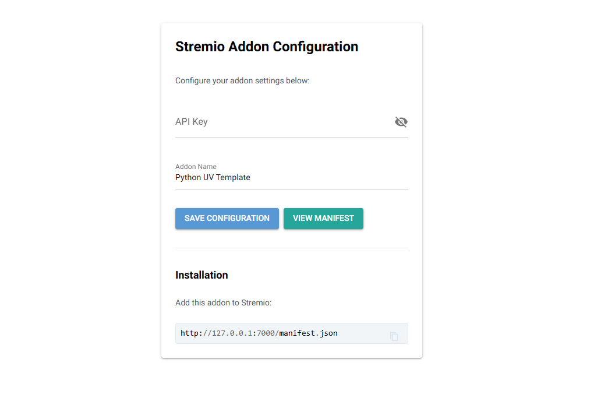
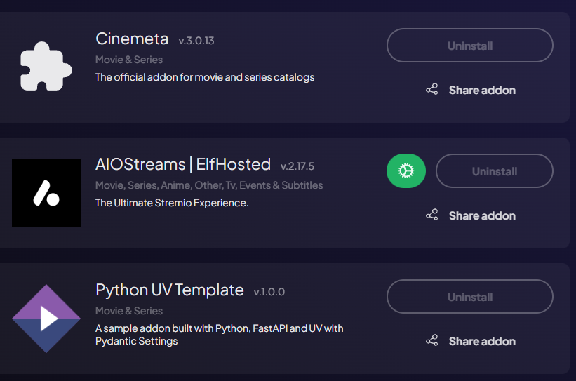
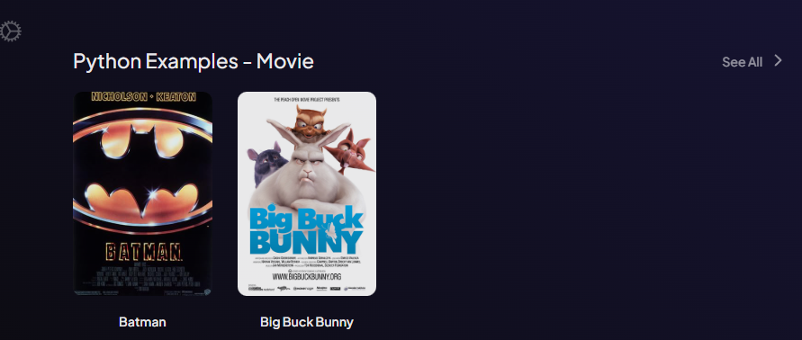

Stremio Python Addon Template
This project is a high-performance, asynchronous template for creating Stremio Addons.
Check my Generative AI Project Template

About The Project
There are many Stremio addon templates, but most are focused on Node.js. This template brings the power of Python, FastAPI, and UV to the ecosystem, prioritizing speed, reliability, and modern development practices.
This is a production-ready template designed to be cloned and customized for your specific addon needs. It's structured as a Python package that runs as a web service implementing the Stremio Addon Protocol.
Key Components
- Stremio Addon (
src/stremio_addon_python_template/): FastAPI server implementing the Stremio protocol /manifest.json- Addon capabilities and metadata/catalog/{type}/{id}.json- Content catalogs/stream/{type}/{id}.json- Stream sources-
/configure- NiceGUI-powered configuration interface -
Configuration UI (
/configure): Interactive web interface built with NiceGUI - User-friendly addon configuration
- Dynamic manifest URL generation (works with both localhost and cloudflared)
-
No manual URL editing required
-
Tests (
tests/): Comprehensive unit tests using pytest - API endpoint testing
- Manifest validation
- Stream response verification
👥 Authors
- (Author) Amine DJEGHRI
🧠 Features
Engineering tools:
- [x] Use UV to manage packages
- [x] pre-commit hooks: use
ruffto ensure the code quality &detect-secretsto scan the secrets in the code. - [x] Logging using loguru (with colors)
- [x] Pytest for unit tests
- [ ] Dockerized project (Dockerfile) both for development and production
- [x] NiceGUI configuration page for easy addon setup
- [x] Make commands to handle everything for you: install, run, test
- [x] Cloudflared for HTTPS (Stremio requires HTTPS)
CI/CD & Maintenance tools:
- [x] CI/CD pipelines:
.github/workflowsfor GitHub - [x] Local CI/CD pipelines: GitHub Actions using
github act - [x] GitHub Actions for deploying to GitHub Pages with mkdocs gh-deploy
- [x] Dependabot for automatic dependency and security updates
Documentation tools:
- [x] Wiki creation and setup of documentation website using Mkdocs
- [x] GitHub Actions for deploying to GitHub Pages with mkdocs gh-deploy
1. Getting started
The following files are used in the contribution pipeline:
.env.example: example of the .env file..env: contains the environment variables used by the app.Makefile: contains the commands to run the app locally.Dockerfile: the dockerfile used to build the project inside a container. It uses the Makefile commands to run the app..pre-commit-config.yaml: pre-commit hooks configuration filepyproject.toml: contains the pytest, ruff & other configurations.src/env_settings.py: logger using logguru and settings using pydantic. the frontend..github/workflows/**.yml: GitHub actions configuration files..github/dependabot.yml: dependabot configuration file..gitignore: contains the files to ignore in the project.
1.1. Local Prerequisites
- This project installs everything needed using the
makecommand. If you don't havemake, you need to install it or use uv.
1.2 Installation
git clone the repo
cd stremio-addon-python-template
- For development: Install dev dependencies with
make install-devoruv sync --dev - For production: Install dependencies with
make installoruv sync
1.3 Usage
- Start the server with either
-
make runor withuv run src/stremio_addon_python_template/main.py -
You will se the following image : 
-
Configuration Page: Visit http://127.0.0.1:7000/ or http://127.0.0.1:7000/configure to access the NiceGUI configuration interface where you can:
- Enter your API key
- Configure addon settings
-
View the manifest URL for Stremio installation
-
Manifest: Access the addon manifest at http://127.0.0.1:7000/manifest.json, you will see:
{"id":"","version":"1.0.0","name":"Python UV Template","description":"A sample addon built with Python, FastAPI and UV with Pydantic Settings","logo":"https://dl.strem.io/addon-logo.png","resources":["stream","catalog"],"types":["movie","series"],"catalogs":[{"type":"movie","id":"python_movies","name":"Python Examples"}],"idPrefixes":["tt"]}
- API Documentation: Access the FastAPI docs at http://127.0.0.1:7000/docs
To use the addon in stremio for testing, you need to use cloudflare, or localtunnel or caddy because Stremio requires HTTPS. - Install once
wget https://github.com/cloudflare/cloudflared/releases/latest/download/cloudflared-linux-amd64.deb
sudo dpkg -i cloudflared-linux-amd64.deb
- Run this everytime you need to access your addon using Stremio or any other app that requires HTTPS:
cloudflared tunnel --url http://localhost:7000
This gives you a URL like https://random.trycloudflare.com/ - Paste it in your browser first to make sure it works, for example: https://random.trycloudflare.com/manifest.json - Open Stremio and add the Addon. -  - Scroll down in the Board where you have your catalogs, you will see your addon. -  - Everytime you restart your cloudflared, a new URL is generated, so you need to add the new url to stremio.
All the URLs: ✅ http://127.0.0.1:7000/ → redirects to /configure ✅ http://127.0.0.1:7000/configure → NiceGUI configuration page ✅ http://127.0.0.1:7000/manifest.json → addon manifest ✅ http://127.0.0.1:7000/catalog/{type}/{id}.json → catalog endpoint ✅ http://127.0.0.1:7000/stream/{type}/{id}.json → stream endpoint ⚠️ The URL to copy to Stremio addons is the one generated by cloudflared.
Check the documentation
You can check the documentation (website).
2. Contributing (For developers)
Check the CONTRIBUTING.md file for more information.